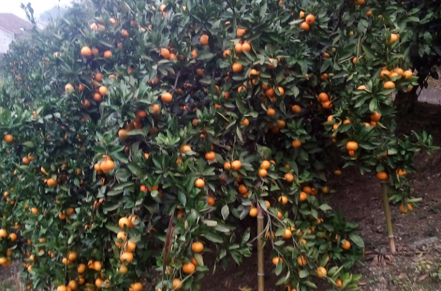

常德，古称"武陵"，别名"柳城"，是湖南省省辖市，湖南省省域副中心城市，环洞庭湖生态经济圈核心城市之一，也是长株潭3+5城市群之一。位于湖南北部，江南洞庭湖西侧，武陵山下，史称"川黔咽喉，云贵门户"，是一座拥有二千年历史的文化名城，是国家公路运输枢纽城市、湘西北铁路枢纽城市。
常德先后荣获全国文明城市、中国优秀旅游城市、国家卫生城市、国家园林城市、中国首届魅力城市、国际花园城市、全国交通管理模范城市、国家环境保护模范城市、中华诗词之市等称号。 常德市现辖武陵区、鼎城区、安乡县、汉寿县、桃源县、临澧县、石门县、澧县，共6县2区，以及代管1县级市津市市。 常德综合实力位居湖南省前列，经济总量常年保持湖南前三甲，常德正致力于打造成为省域副中心城市，并全面发挥湘西北地区中心城市、综合交通枢纽城市和生态宜居城市的职能。
壶瓶山位于湖南石门县西北部，是湘鄂两省分界山，海拔一般在2000米以上，主峰高达2098.7米，被称为湖南屋脊。壶瓶山山顶四周高，中间低，形如壶口，故名壶瓶山。壶瓶山旅游区是全球二百个重点生态区之一、国家级自然保护区、省级生态旅游示范区。被誉为"地球怪圈"(北纬三十度)上的"自然迷宫"，东半球上的"诺亚方舟"。
桃花源位于常德桃源，晋朝陶渊明笔下的《桃花源记》中的“桃花源”便是在此地，这里芳草鲜美，落英缤纷，每逢春季，桃花便开遍了每个角落，真的是人们心中的世外桃源。1992年，桃花源被国家林业部批准为国家森林公园。2001年，获批为国家4A级景区。


石门柑橘 津市牛肉粉 土家酱香饼